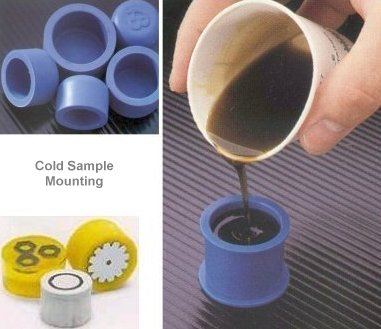
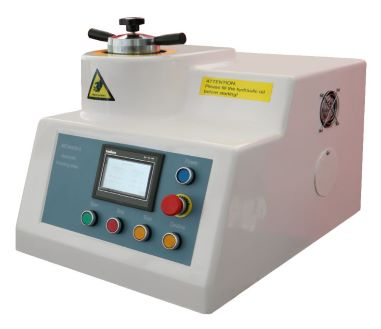

HOT AND COLD MOUNTING
Theory
- The primary reason for mounting samples is simply to facilitate
ease in handling. Sharp corners are eliminated, thereby
increasing the safety to the metallographer and avoiding damage
to the papers and cloths used for preparation.
-
Also, all samples are of a uniform size and shape so that
automatic preparation equipment can be used
-
The process protects the material’s surface, fill voids in damaged
(porous) materials, and improves handling of irregularly shaped
samples.
-
Standard mounts usually measure 1, 1.1/4 or 1.1/2 inch in
diameter. The mount thickness should be about one half the
mount diameter. Thin mounts are harder to handle and very
thick mounts tend to rock during preparation.
Characteristics of mounting material
•Should have sufficient hardness and it should, ideally, have grinding and
polishing characteristics similar to the specimen
•It should be capable of penetrating small pores, crevices, convolutions and
other surface irregularities
•Should exhibit good adhesion to the sample surface
•It should resist physical distortion due to the heat generated during grinding,
polishing, etching and washing
•It should not clog grinding papers rapidly
•The mount should be chemically inert to the variety of lubricants, solvents and
etchants which are used
•It should not be prone to formation of defects in the cured mount, such as
cracks or voids
•No health hazards and be readily available at a reasonable cost
Cold Mounting
•Cold mounting or embedding - a resin is mixed with a
hardener (or accelerator) to provide the mounting
compound, and then the polymerization process takes place
•In some cases, this process gives-off heat, which can be
controlled by the use of ice or cool air blow setting
•Cold mounting compounds are preferred for specimens that
are sensitive to the heat or pressure


Hot Mounting
•Uses thermosetting or thermoplastic mounting compounds, hardened
in a mounting press which exerts both heat and high pressure
•Hard mounts in a short space of time, superior to those obtained with
cold mounting
•Heating (~ 180 °C) and considerable pressure applied - may be
unsuitable for delicate, soft or low melting point specimens
•Supporting structure can protect the sample from the initial pressure
•In the case of very soft or thermally sensitive materials, hot mounting is
not appropriate


Procedure for Hot Mounting
- First check the machine with readings like coolings , settings are correct.
- Apply the glue stick at the stage
- Place the sample in center of the stage with face you want to polish pointing down.
- Lower the sample
- Keep funnel at the stage and take the clarofast by using one big scoop
- Take the second sample and apply the antistick to the sample
- Apply the antistick to the cap,tight the cap through clockwise
- Keep the temperature at 180 degree celsius and the start button
- After both lights will be off so the mounting is completed
- Take the sample from the stage
Procedure for Cold Mounting
- First take mounting cups and spray econo stick liquid in mounting caps in both parts then epoxy resin doesn't stick in the mounting cups
- Take the sample specimen and it should be cleaned
- Place the specimen in the middle of mounting cups
- Take the beaker and take the aka-resin liquid epoxy of 50 grams and 6 grams of aka-cure slow
- Stirring well resin in the beaker till 3 minutes
- Put the resin in the mountiing cups
- The sample will be ready for 8 to 24 hours
- Remove the resin from mounting cups
Environmental Hazards while using cold mounting resins
- Epoxy resins are dangerous. It acts as irritant, which can cause toxic eczema.
- Resins are highly toxic.
- Resins are not biodegradable and do not decompose.
- These resins can also damage ozone layer.